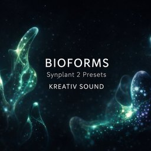

How to Layer BIOFORMS for Organic Motion

BIOFORMS works best when one layer moves and one layer stays still.
1. Start with one stable base
Pick a preset that holds the tone. Keep it simple. This is the part that keeps the sound grounded.
2. Add one moving layer
Bring in a second preset with more motion or texture. Keep it lower in the mix. You want movement, not clutter.
3. Leave space around it
BIOFORMS already has detail. Do not stack too much on top. A small amount of space makes the motion feel more alive.
The main idea is simple: one layer for tone, one layer for motion.